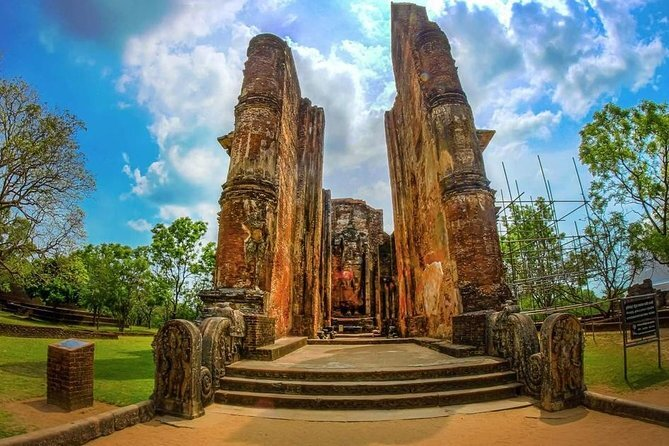
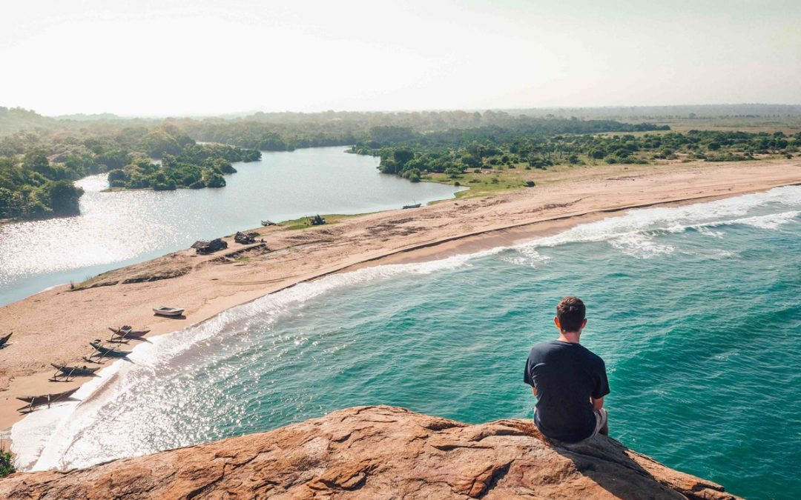
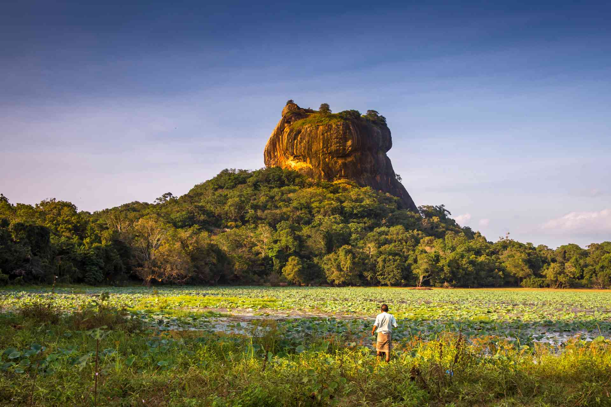
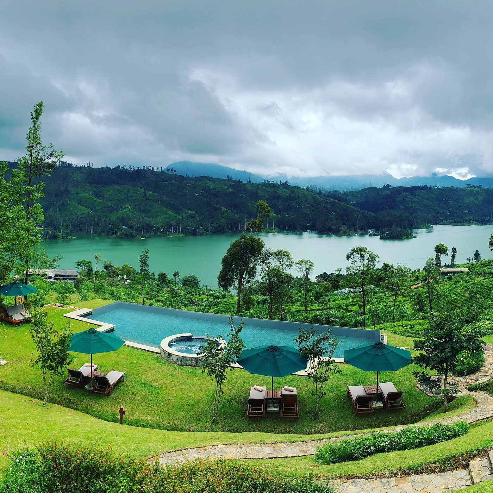

Island Wonders
Your ‘Must-See’ Places
Sri Lanka is a treasure trove of experiences, a small island bursting with surprises at every turn.
In just a short drive, you can leave the hustle of city life behind and find yourself on a serene,
sun-kissed beach. Venture a little further, and you’ll climb misty mountains, wander through lush tea
plantations, or discover cool cloud forests.
From surfing the Indian Ocean waves to spotting whales off the southern coast, from exploring ancient
ruins to encountering gentle elephants in their natural habitat, Sri Lanka offers endless variety. Every
corner of this island has a story, a view, or an adventure waiting—and we’re here to help you discover it all.

Anuradhapura
Ancient kingdom of stupas, temples and centuries-old Buddhist heritage.
Read More

Arugam Bay
World-class surfing bay with beaches, wildlife and lagoon adventures.
Read More

Bentota
Golden beaches, water sports and river cruises in a peaceful escape.
Read More

Colombo
Sri Lanka’s vibrant capital with culture, dining, shopping and nightlife.
Read More

Dambulla
UNESCO cave temples and a gateway to Sri Lanka’s cultural triangle.
Read More

Ella
Hill-country paradise with treks, waterfalls and dramatic viewpoints.
Read More

Galle
Colonial charm, beaches, boutique cafés and the iconic Galle Fort.
Read More

Habarana
Safari hub offering wildlife, lakes and cultural excursions.
Read More

Hatton
Misty tea estates, lakes and scenic viewpoints in plantation country.
Read More